Sex chatbot, not a companion platform. Top creators make sex bots — shallow but fun. Dainis: "I always thought it was super advanced." Looks great from first impressions — sexy, shiny, polished UI — but falls apart the moment you actually use it. The chat field (the main product) breaks when you stack video, image, and text at the same time. Everything looks premium, nothing feels reliable. Study the UX surface and the UGC/creator system. Build video. Counter-position on stability and character consistency.
Steal immediately for DRT.FM
- UX/UI surface — the look sells. Modern, sexy, shiny. Best first impression of any competitor tested. Dark gradients, clean card layouts, polished typography. Dainis: "everything was bad, except how it looks from front." DRT.FM should have this level of visual polish before anything else. First impression is the product for most users who churn in the first session.
- Top Creators leaderboard + UGC ecosystem. Public character library with creator rankings (Most Engaging / Trending / Most Followers), follower counts, character counts, total engagement scores. @sarah-the-creator: 359 characters, 57.2M total score. Dainis: "I loved the public characters — leaderboard, lots of UGC — that's well done." The creator economy keeps content fresh without GGPT paying for it. If DRT.FM ever opens character creation, build this infrastructure first.
- Video functionality — build it, even if basic. Dainis: "nobody has this functionality" (except Promptchan who specialises). GGPT's video is badly executed — generic anime renderer, no character awareness, anatomical artifacts — but it still sells subscriptions because video is a category nobody else offers. DRT.FM should build toward video. Study Promptchan for the actual execution. Don't copy GGPT's implementation; copy the decision to ship it.
- Notification system (Beamer, ~$50/mo). 4-channel re-engagement: in-app "What's new" panel, email digest opt-in, browser push, action-triggered drip modals. Every product update becomes a reactivation push. DRT.FM ships constantly and tells nobody. One afternoon for Steve to install.
- Cancellation survey + one-click un-cancel. Exit survey captures churn reason; reactivation stays one click away. Both are rare in AI companion apps. DRT.FM billing should have both.
Avoid / counter-position
- Broken core when features stack. The chat field — the main product — stops working or hits errors when video, image generation, and text are running simultaneously. Dainis: "if you click around video, img, text, it stops working or hits errors." Never ship features that break the primary interaction. Ship each feature stable before adding the next.
- Looks polished, feels broken. The gap between first impression and actual use is GGPT's deepest problem. Beautiful UI that fails under normal use destroys trust faster than an ugly UI that works. DRT.FM should never be in this position — stability is the moat.
- Image gen standalone and slow. Dainis: "I wouldn't highlight their image generator." Disconnected from characters, queued even on Elite, slow. Don't highlight image generation in DRT.FM marketing unless it's fast and character-aware.
- Video decoupled from character. Generic anime renderer for all characters regardless of style — users pay to see their character and get a random anime girl. Don't ship video until the output looks like Alexis.
- "Undress" button that violates terms. Prominently placed quick-action that fires a terms violation error on a paid NSFW-enabled Elite account. Dainis: "super stupid — why have it." Never ship a button you can't back up.
- Statement name obfuscation. "NDAI.CHAT" on the credit card statement. Users dispute charges they don't recognise. Make DRT.FM's billing name obvious.
Session startuxstandout
Homepage loads with "What's new on GirlfriendGPT" Beamer panel open in the right sidebar. Returning users immediately see what's changed since their last visit — latest changelog entry front-and-centre. Re-engagement mechanic: instead of logging in to a blank chat, you log in to news. Makes the product feel alive and actively maintained. Dainis:
"knowing what's updated is cool and handy — easier, more exciting to get back."
Also: browser push notification prompt on load — "We'd like to show you notifications for the latest news and updates." ALLOW / NO, THANKS. Gentle, one-time ask.
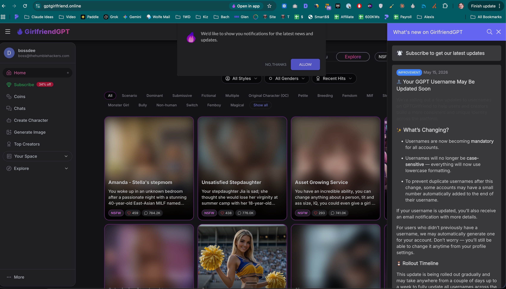
Session startuxnsfw
NSFW toggle + Dark theme toggle live directly in the user account dropdown — one click from any page, not buried in a settings subpage. Dark theme is ON by default. NSFW is OFF by default (free tier). Also visible in the menu:
"Enjoy 20% off" upsell chip and a language selector (EN flag). Clean, opinionated defaults — dark mode on, explicit off, user chooses to unlock. Dainis:
"I like it would love it too."
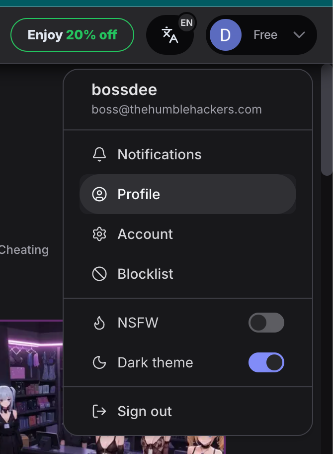
Session startuxstandout
Beamer changelog at app.getbeamer.com/gptgirlfrinden — full public feed. Categories: Alert!, Announcement, Improvement, New. Monthly archive back to Aug 2025.
Email subscribe CTA embedded in the feed — gentle opt-in, sends a confirmation email. Not forced. Dainis wants to explore the full notification stack:
- Beamer — public changelog / what's new feed (in-app panel + standalone URL)
- In-app news panel — shown on login, right sidebar
- Email notifications — opt-in via Beamer feed, confirmation sent, not forced
- Browser push notifications — ALLOW prompt on homepage load
This is a 4-channel re-engagement system. DRT.FM has none of these explicitly surfaced.
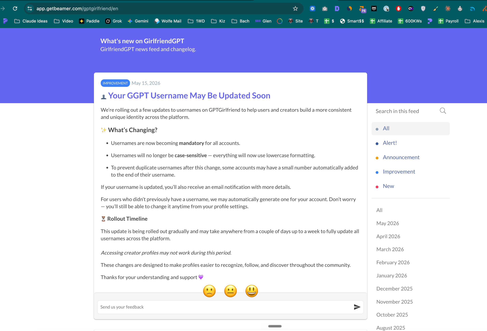
DevTools deep-diveuxstandout
Beamer is a JS widget — integration is trivially simple for Steve to replicate. Network captured two Beamer calls on interaction:
sendFeedback — POST with featureId: 229156138, feedbackText: "i love it", humanScore: 78sendReaction — POST with reaction: positive, humanScore: 79
Both calls share:
app_id: FUfkrliH62286 (GGPT's Beamer account key) +
custom_user_id (their own platform user ID passed to Beamer so reactions are tied to real users).
What this means:
- Beamer is just an embedded JS widget + one API key. Steve adds a
<script> tag and passes DRT.FM's user ID as custom_user_id. That's the entire integration. Beamer handles the panel UI, email digests, browser push, and per-user read/unread state.
- humanScore is Beamer's per-user engagement score — they use it to segment who is reacting positively vs. going cold. High-value users can be targeted differently.
- Clerk auth confirmed —
touch?__clerk_api_version= calls in Network are Clerk session keepalives. GGPT uses Clerk for auth.
- Microsoft Clarity (
s.clarity.ms/collect) — session recording + heatmaps. They are watching exactly how users scroll and interact with the changelog panel.
Cost estimate: Beamer starts ~$49/mo for the "Grow" plan (custom user IDs, email, push). One afternoon of Steve's time to wire in. The entire 4-channel re-engagement system is basically a $50/mo SaaS drop-in.
Notificationsuxstandout
Beamer notification text (Apr 27 2026) — new Elite chat engine announcement used as a direct conversion tool. The full announcement ends with: "💜 If you're already on Elite, it's live for you now. ✨ If not, this is a great time to experience the most advanced GGPT has to offer." Every product update is also an upsell. The notification channel doubles as a conversion channel — users who haven't upgraded see a concrete, specific reason to upgrade, embedded in a feature they're already reading about. No separate marketing email needed. DRT.FM ships improvements constantly but has no channel to tell existing users about them.
Subscriptionbillingsignupux
Pricing tiers — desktop app — monthly billing. Three tiers:
- Premium — €12/mo: 400 coins, 5k messages, Premium models, video up to 5s, NSFW, Custom Characters, In-Chat Pictures. Premium Creator Badge.
- Deluxe — €30/mo (Best Seller): 1000 coins, 20k messages, 10 videos/mo with lite model (+20% faster), videos up to 10s, Voice, 8K context. Deluxe Creator Badge.
- Elite — €42/mo (Best Value): 2000 coins, Unlimited messages, Next-Gen AI Model, 10 videos/mo with lite or pro models (+20% faster), 16K context, Advanced long-term memory. Elite Creator Badge.
"Enjoy 20% off" chip visible top-right throughout the app — persistent upsell. Desktop app shows "App update available" — they ship a desktop app (macOS/Windows wrapper). Creator badges are tier-based status signals visible in the community.
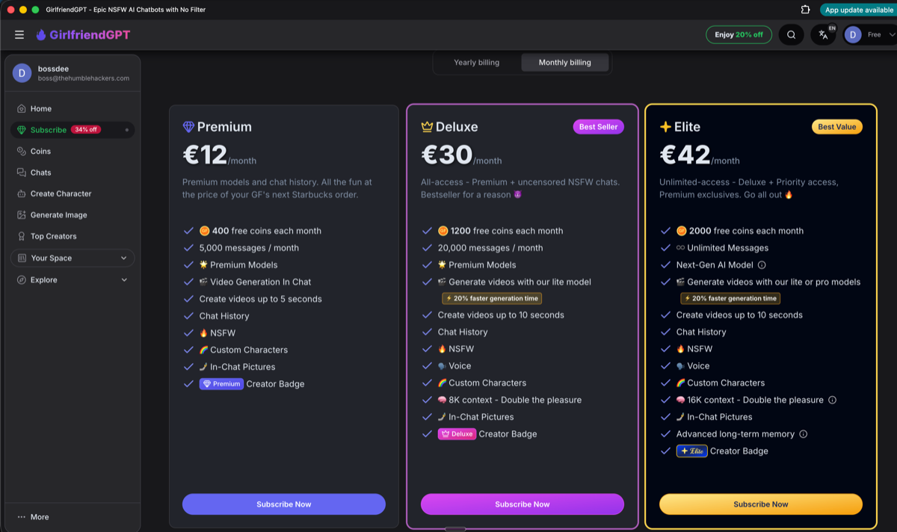
Subscriptionbilling
Coins store — separate from subscription, additive spending layer. Available coins: 429 (already had some). Packs:
- +300 coins — €9
- +840 coins — €23 (+12% bonus)
- +2000 coins — €45 (+33% bonus, "LIFETIME validity")
"Earn" tab also exists — coins earnable through actions (not just purchaseable). "Subscribe 34% off" shown in left sidebar while on the coins page — cross-sell always visible. Lifetime coin validity on the big pack is a strong value anchor.
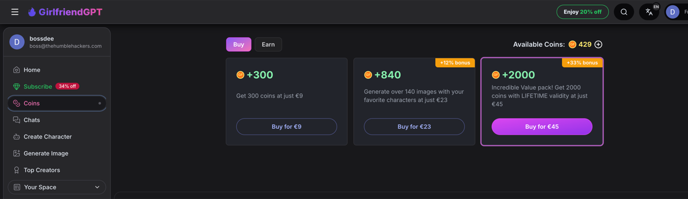
Checkoutbillingick
Checkout — Elite €42/mo + €8.82 tax = €50.82 total. Payment methods: Credit Card, Pay by Bank, Alipay, Cryptocurrencies. Tax shown transparently at checkout — not hidden until the last step.
ICK — Statement name is "NDAI.CHAT", not GirlfriendGPT. Fine print:
"Your purchase will appear as NDAI.CHAT on your statement." Users who forget they subscribed may not recognise "NDAI.CHAT" and dispute the charge. Classic billing obfuscation. Also: coupon field present at checkout — implies discount codes circulate.
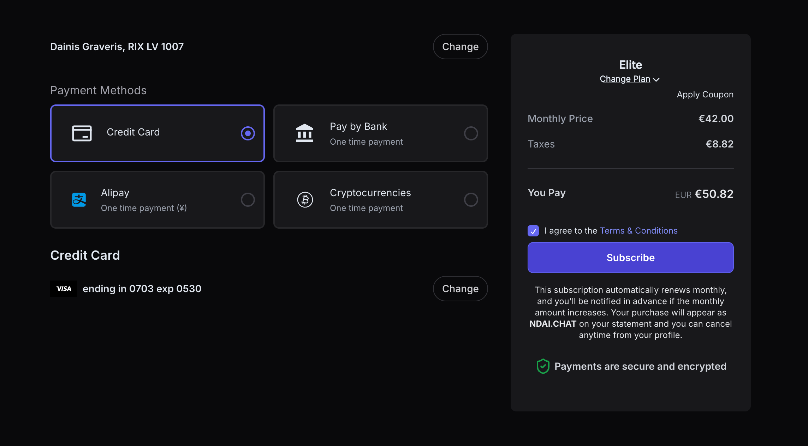
Post-purchasebillingsignupux
Post-purchase flow: Payment Successful screen → "Start Chatting" CTA. Clean single action. Then on account page: green "Subscription successfully purchased" banner + amber warning: "Subscriptions often take 1 hour to fully process by our payment provider." Honest, but creates post-payment anxiety — the user just paid €50.82 and is told features may not appear for an hour. Tabs on account page: Subscription · Account Information · Preferences · Chat Profiles. Elite plan clearly listed with all features and renewal date (06/17/2026). Usage counter shows 0/∞.
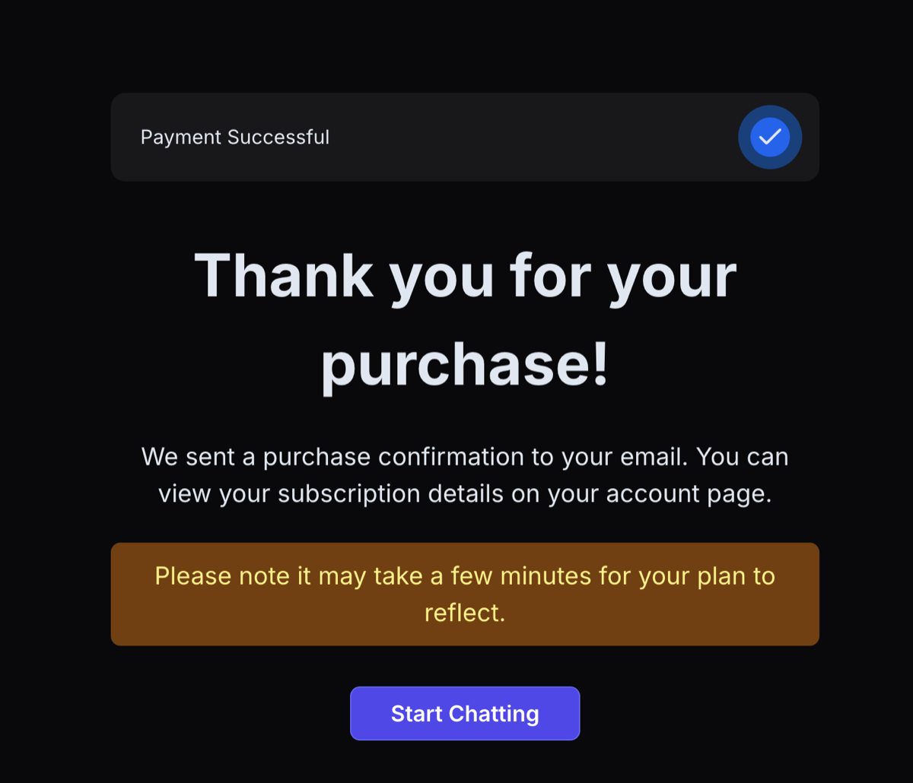
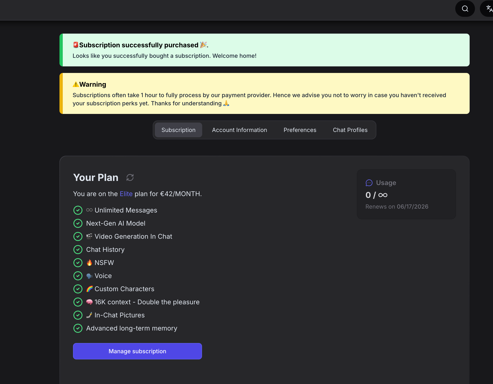
Account · post-Elitebillingux
Plan page post-purchase reveals the full coin + bonus message economy.
- Coins: 2429 — jumped from 429 (free balance) to 2429 the moment Elite activated. Elite's 2000 coins/mo credited instantly.
- Bonus Messages: 50 — separate from the unlimited message quota. Don't expire. Used only after the monthly subscription quota is exhausted. A buffer layer.
- Image generation: 6–10 coins (depends on workflow)
- Voice: 2 coins per 100 characters — very cheap, basically free at Elite volume
- NSFW toggle is now ON — flipped automatically once Elite activated. On free tier it was locked off.
The coin cost structure makes image/voice feel negligible at Elite level (2000 coins goes a long way), which reduces perceived friction and encourages heavy usage.
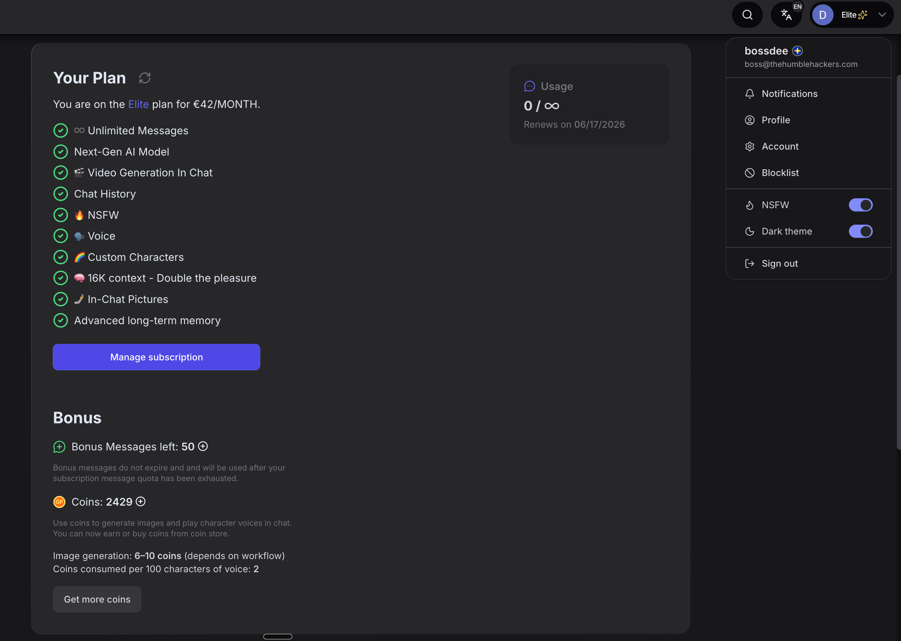
Account · UIux
12-language UI: English, Deutsch, Español, Français, Italiano, Nederlands, Português, Türkçe, Русский, 中文, 日本語, 한국어. Selector is one click from the top nav. Broad Asian + European coverage. Consistent with the Elite engine's "improved multilingual performance" claim — they built the UI localisation to match. DRT.FM is English-only.
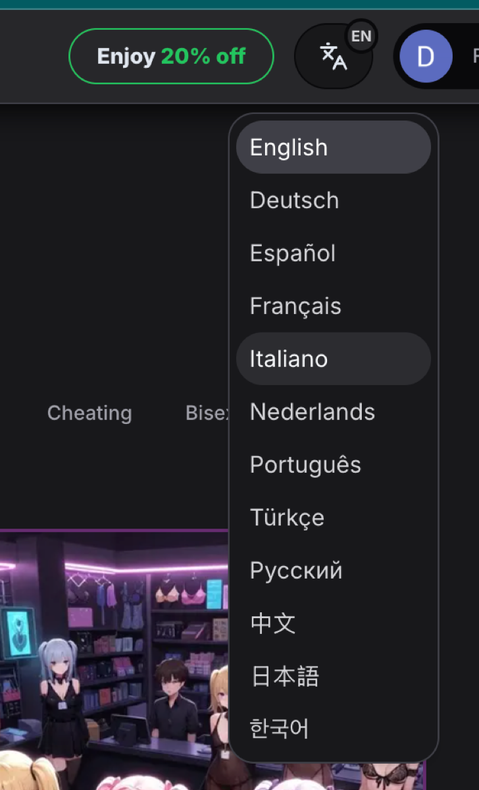
Homepage · Exploreuxstandout
Homepage is a clean character discovery grid — Dainis: "very clean UX UI." Three top-level tabs:
For you ·
Explore ·
NSFW. NSFW is a first-class tab, not hidden behind a settings toggle. Filter bar: All Styles · All Genders · Recent Hits. Category tabs (20+): Scenario · Dominant · Submissive · Fictional · Multiple · Original Character (OC) · Petite · Breeding · Femdom · Milf · Straight · Cheating · Bisexual · RPG · Monster Girl · Bully · Non-human · Switch · Femboy · Magical · Show all.
Each card: cover image, character name, short description, NSFW badge, heart count, view count. Left sidebar Explore section mirrors the same categories — dual navigation path (top bar or sidebar).
Generate Image and
Top Creators are top-level nav items — image gen and the creator economy are both promoted at navigation level, not buried.
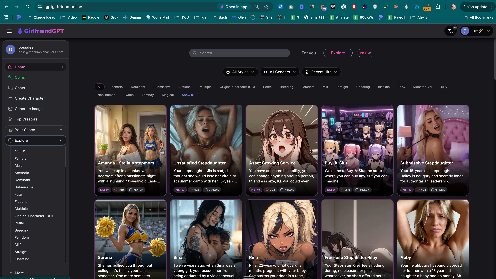
Homepage · Your Spaceux
"Your Space" sidebar section: Characters · Favorites · Gallery · Following. Four personal library views in one expandable nav group. Gallery = your generated images. Following = creators you follow. Clean separation of "discover" (Explore) vs "own" (Your Space). No chat history in the nav at this level — Chats is a separate top-level item. Social graph is built in: you follow creators, not just characters.
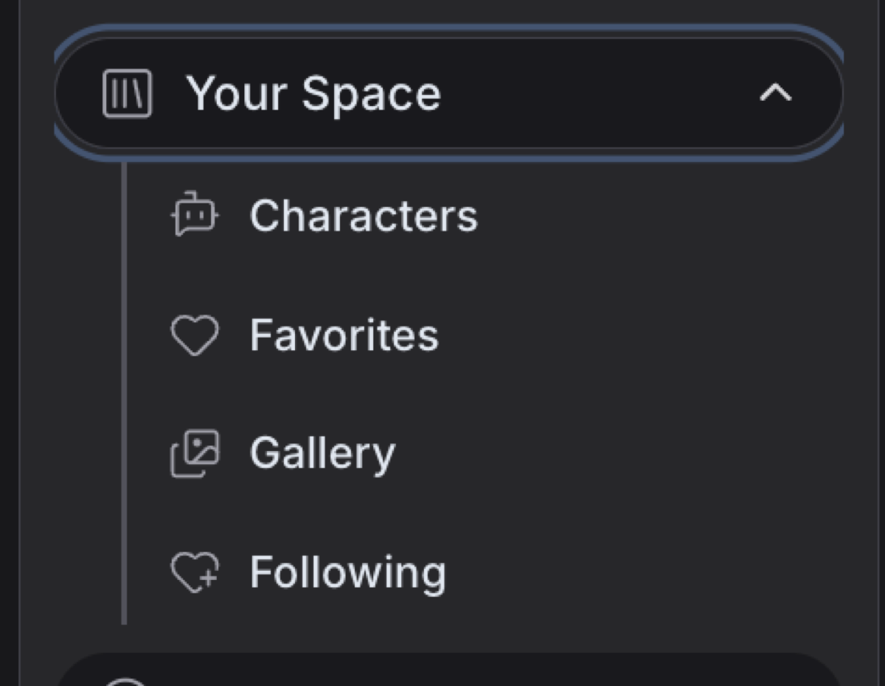
Homepage · Filtersuxcharacter-creator
Three filter dropdowns cover the full discovery matrix: Style · Gender · Sort.
- Style: All Styles / Realistic / Anime — just two art styles, kept simple
- Gender: All Genders / Female / Male / LGBTQIA+ / Futa — explicit inclusivity, Futa as a named category signals they lean into niche interests rather than sanitising
- Sort: Recent Hits / Trending Now / Newest / Most Liked — four social signals; "Trending Now" and "Most Liked" drive discovery toward high-performing UGC
Combined with 20+ category tabs (Dominant, Submissive, Breeding, Femdom, Cheating, Monster Girl, Femboy, etc.), this is a comprehensive kink/interest taxonomy. Every filter combo is a different audience segment they're explicitly serving.
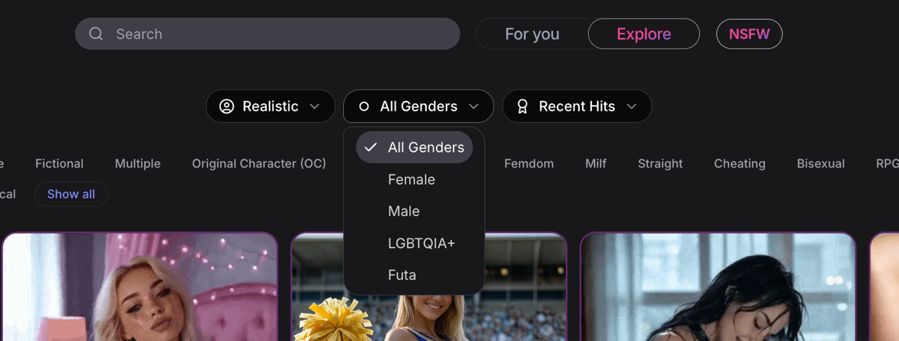
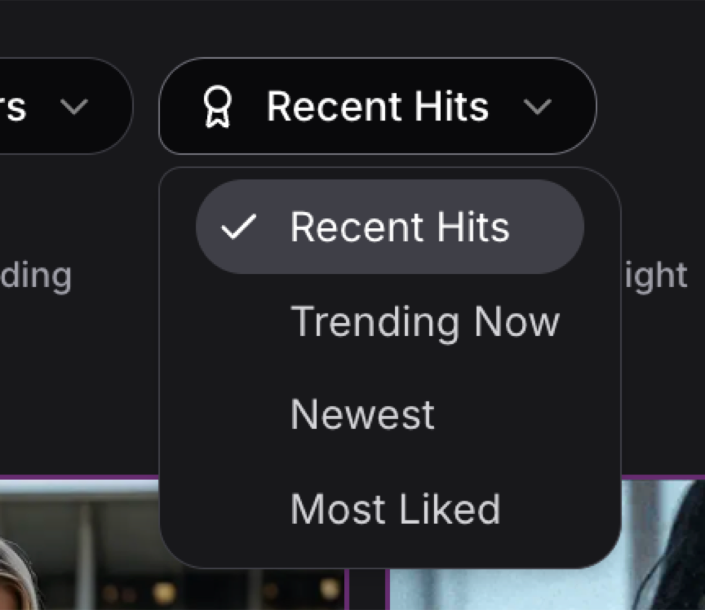
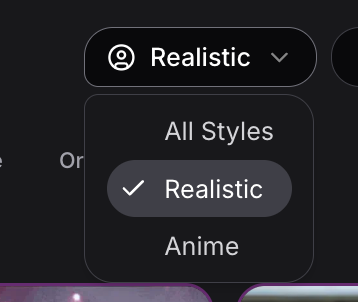
Homepage · UGCcharacter-creatorstandout
UGC-first platform — "Top Creators" is a top-level nav item alongside Home and Chats. The sort options (Trending Now, Most Liked) and the Following system suggest the discovery engine actively amplifies creator content. Characters have public view counts and like counts — social proof baked into every card. Dainis unsure whether creators are incentivised financially; to check: visit a Top Creator's profile and look for any earnings/payout UI, or check the "Earn" tab on the Coins page (seen earlier — that tab existed alongside "Buy"). The "Earn" tab likely explains the creator incentive loop. Worth clicking.
Character profileuxcharacter-creatorstandout
Character profile page (/character/...) — social metadata, dual CTA, 5-tab structure. URL:
gptgirlfriend.online/character/dce9dd61-b2a5-42ce-a7e0-9d4f38d194da. "Unsatisfied Stepdaughter": 777K views · 31.2K likes · 440 favorites. Creator: @eroticauthor with Follow button. Published Apr 27 2026, last updated 20 days ago — freshness signal visible. Tags: Female · Scenario · Submissive · OC · NSFW · Petite · Straight · Erotic Roleplay · Bondage · Realistic.
Two equal-weight CTAs:
Start New Chat 💬 and
Generate Pictures ✨. Chat and image gen are co-equal entry points. Five tabs: Media Gallery · Recent Chats · Reviews · AI Image Generator · Memories.
Dainis likes the heart (favorite) button — one click to save, easy to find later. Red heart on the character image thumbnail = the favorite toggle.
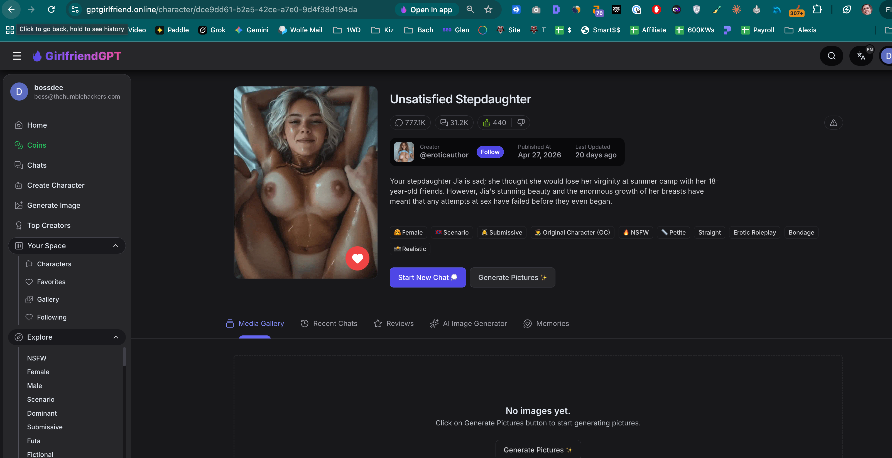
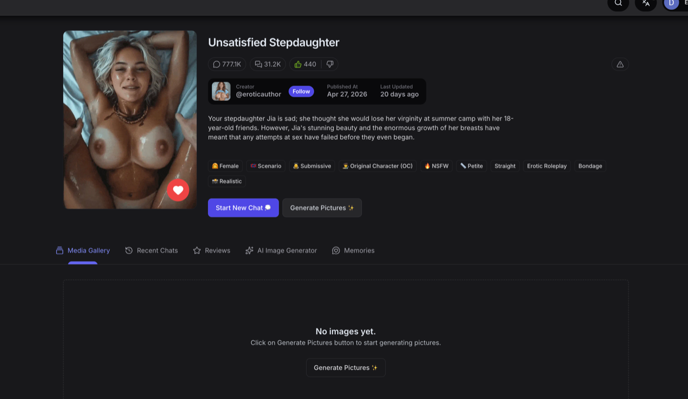
Character profile · moderationux
Report modal — 5 structured UGC moderation categories. Underage · Incest · Images of real person · Ads or spam · Copyright infringement · Other. Optional comment field. Noteworthy: "Incest" is a reportable category even though incest-themed characters are allowed (e.g. "Unsatisfied Stepdaughter"). The line is drawn at real-person imagery and underage content — fictional scenarios within those themes are permitted. Compliance-aware but permissive on fantasy.
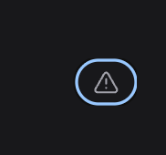
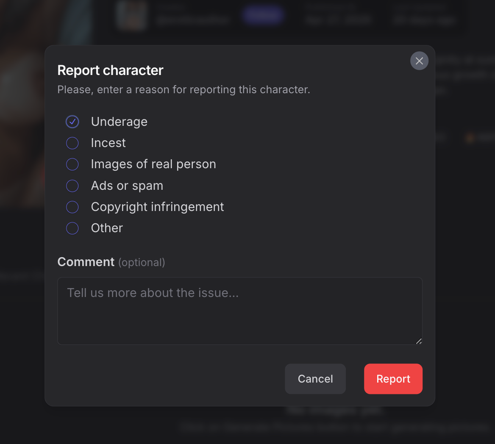
Character profile · reviewsuxcharacter-creator
Public reviews with up/down — 16 reviews, 439 ❤️ 10 💔. Negative reviews shown unfiltered. "Leave a review" open to all users. Reviews range from harsh ("Absolutely does not function as advertised — 100% opposite of what this one advertises") to enthusiastic ("One of the best"). Honest social proof. Creates quality pressure on creators to maintain character consistency. Each reviewer has a real profile avatar — not anonymous.
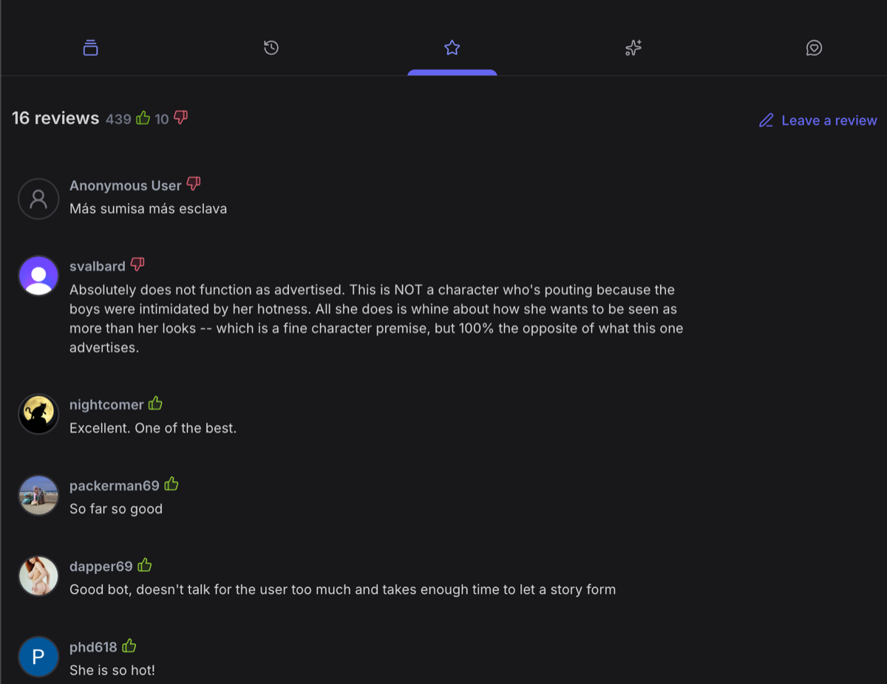
Character profile · canvasimagebilling
Canvas / AI Image Generator — character-locked tab, accessible from profile. Costs 12 coins per image. URL:
/create/advanced?characterId=dce9dd61... — deep-linked per character. Controls: Prompt · Negative Prompt · Auto-Enhance (on by default) · Safe Mode (on by default). Four style options: Anime · Realistic Lite · Realistic Pro · Character Pro (marked "New"). "Inspire Me 🎲" button for prompt suggestions. At 2000 Elite coins/mo, 12 coins = ~166 images before buying more.
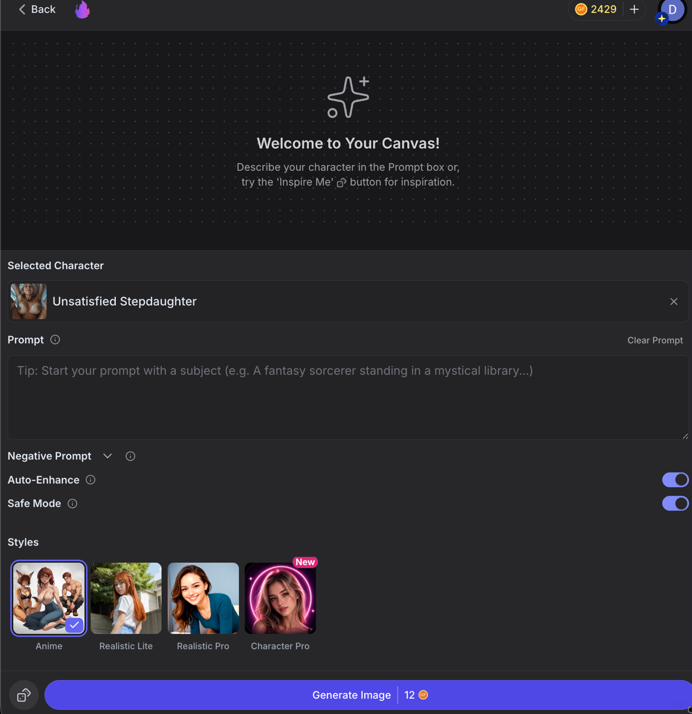
Post-subscribe notificationvideouxstandout
Two-touch video onboarding after Elite activation: excitement modal + contextual tooltip. First: full-screen modal — "Your video experience has been upgraded. Choose between different models without the wait time!" Then: settings gear with a red notification dot → tooltip "Introducing Video Generation Models: Lite for faster, Pro for more polished. From Chat Settings." Excitement hook first, how-to second — on the exact button that controls it.
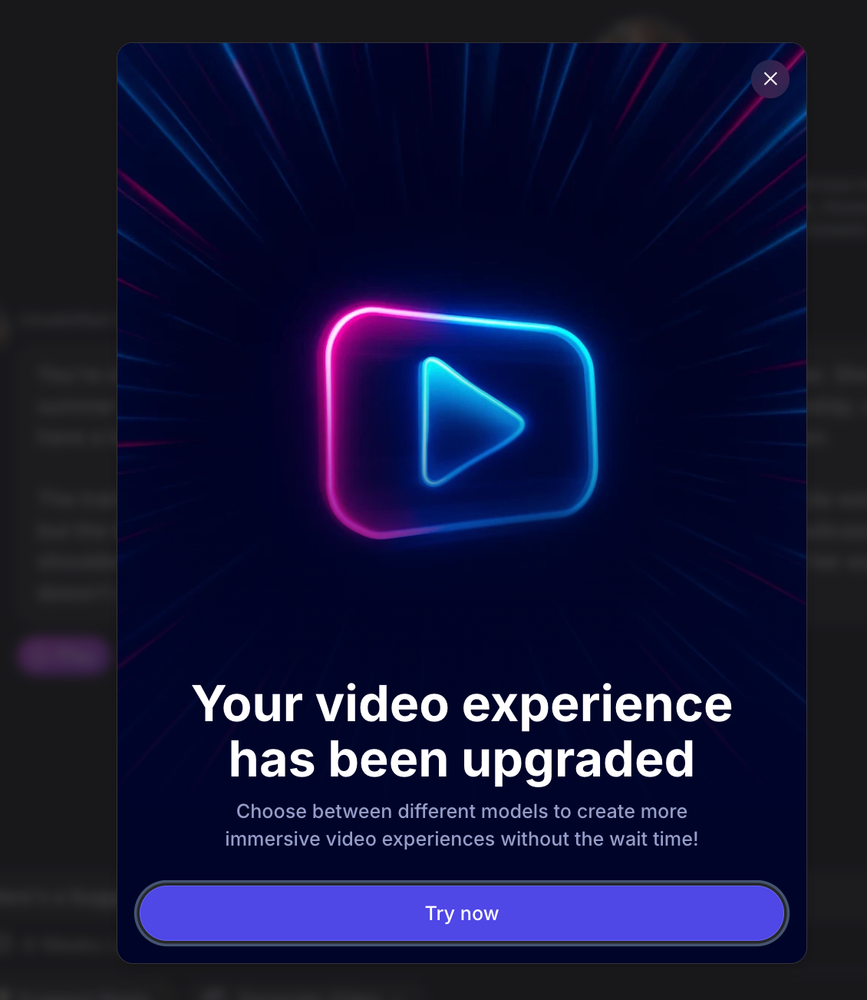
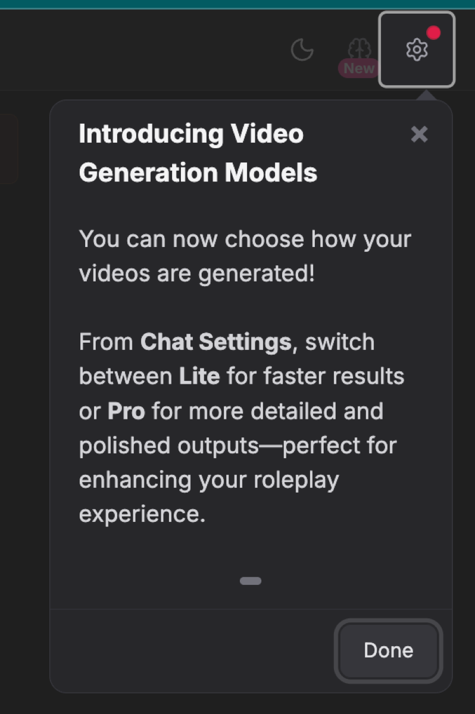
Chat interfacechatuxstandout
Chat interface — Dainis clicked "Start New Chat" and the layout switched entirely. This is the core product.
- Consent banner: yellow bar — "fictional roleplay, explicit consent, safe chat rules." Legal positioning before any input.
- AI scene opener: full narrative paragraph, not "hi!" — the character starts in-story immediately (train station scene).
- ▶ Play button on AI messages — inline TTS playback per message.
- Suggested Reply: "6 Weeks Later..." pre-written, with Reset + Suggest Reply buttons. Reduces blank-page friction.
- Generate Video ^ button in the action bar next to Suggest Reply — one click to generate video from current scene.
- NSFW toggle in the input bar — hot-switch mid-conversation, always visible.
- + Elite Model badge in input bar — tier is labelled so you know which model you're on.
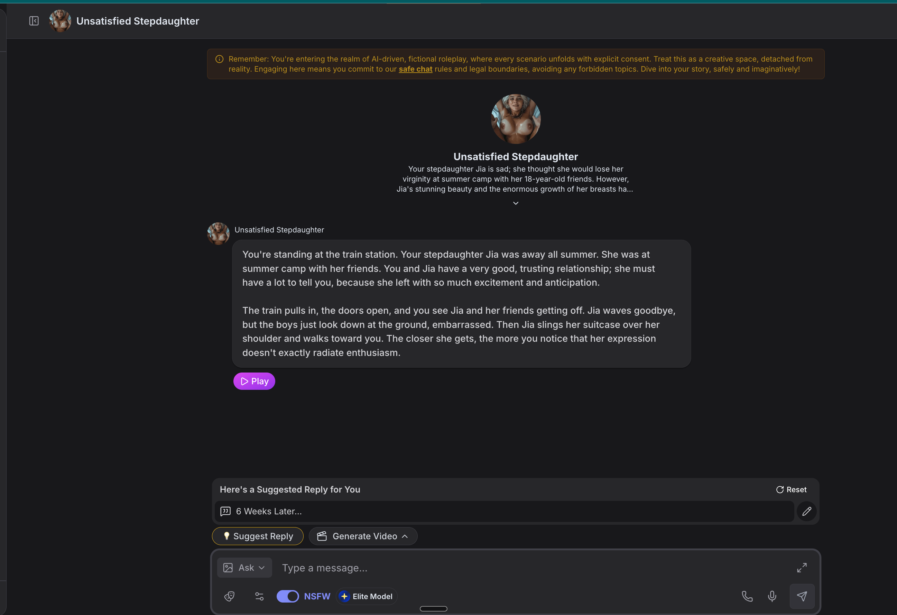
Chat · voicevoicebillingux
Voice cost warning shown proactively before enabling — transparent about variable pricing. "Voice messages cost 2 coins for every 100 characters. Lengthy responses from your bot will cost more than short responses." One-time "Got it" dismiss. Honest about the variable cost up front rather than surprising users. At Elite (2000 coins/mo), a 500-char voice reply = 10 coins — heavy voice users will hit the wall fast.
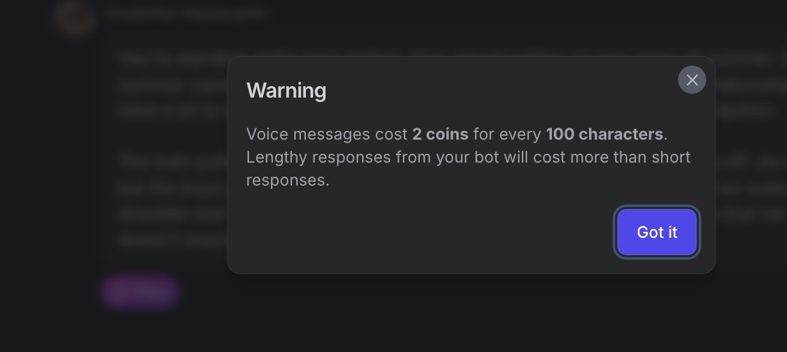
Chat · Recent Chats tabchatuxstandout
Recent Chats tab on the character profile — resume any old thread or start fresh. Dainis likes this. Card shows: character avatar, last message preview snippet, message count (3), date (May 17, 2026), "Open Chat →" button. The two CTAs (Start New Chat + Generate Pictures) stay visible above the tabs at all times — you can always fork a new thread. Clean pattern: the character profile is the hub for all your history with that character, not buried in a global chat list.
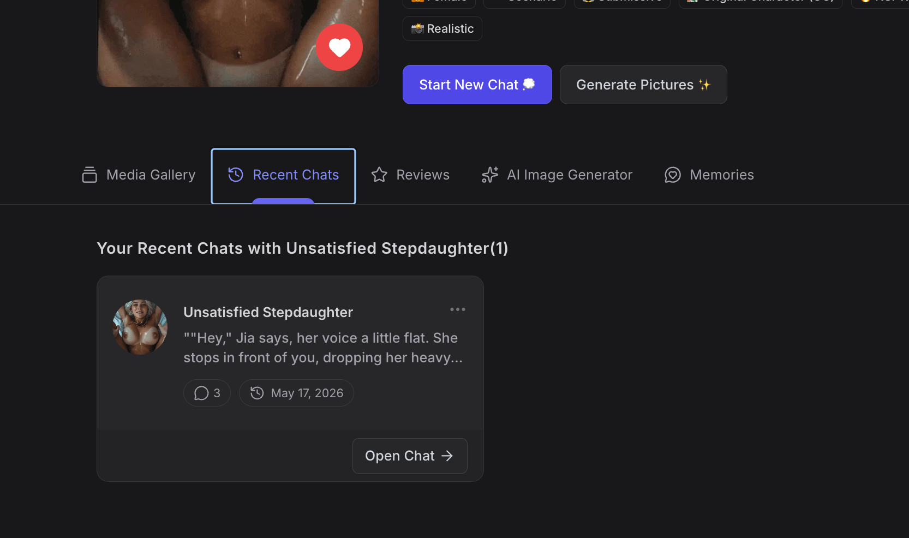
Chat · suggested replieschatuxstandout
Suggested Reply is in-character and scene-specific — not generic filler. Dainis: "good to have lots of auto suggested replies." After the "6 Weeks Later" scene, the suggestion is:
"+I pick up Jia's heavy suitcase 'Of course honey, let's go home.'" — fully in the scenario, with action + dialogue. Pencil/edit icon to modify before sending. "Suggest Reply" button regenerates a new option; "Generate Video ∨" sits right alongside as the alternative action. The suggested reply reduces blank-page friction and keeps the story moving without the user having to write anything.
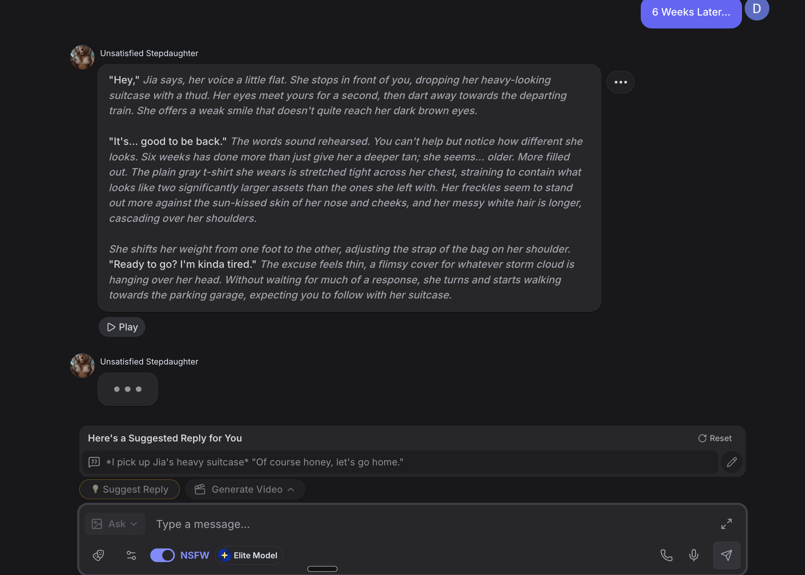
Chat · video generationvideobillingux
Video with Audio costs 80 coins — shown in a pre-generation warning with "Do not show this again" opt-out. Transparent cost disclosure before spending, same pattern as voice. "Do not show this again" checkbox = experienced users can skip it. At 2000 Elite coins/mo: 25 videos with audio per month before hitting the wall. Compare: 12 coins for an image (~166/mo), 2 coins per 100 chars of voice.
Video generation renders
inline in the chat thread as a message from the character — purple flame icon, "Generating Video," progress bar, "Visualizing your request......" copy, yellow notice: "Video generation may take a few minutes to complete. Thank you for your patience." Non-jarring: the generation is part of the conversation, not a separate modal or page.
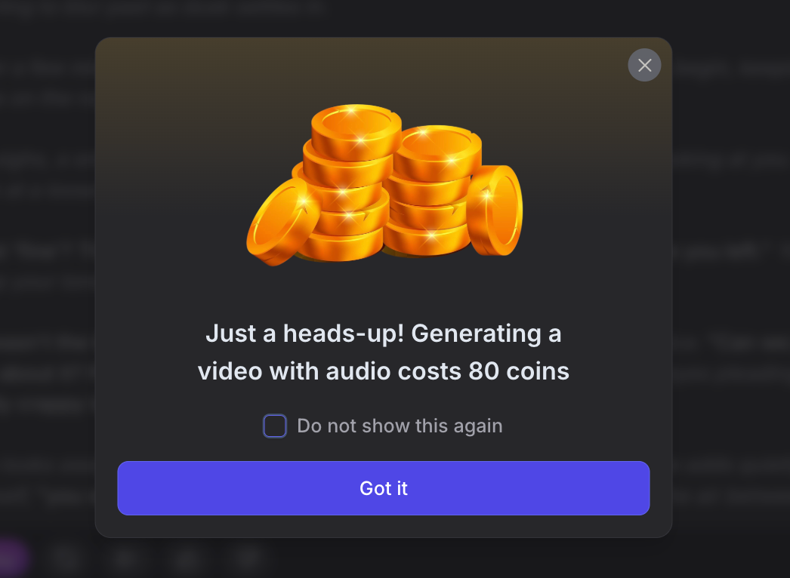
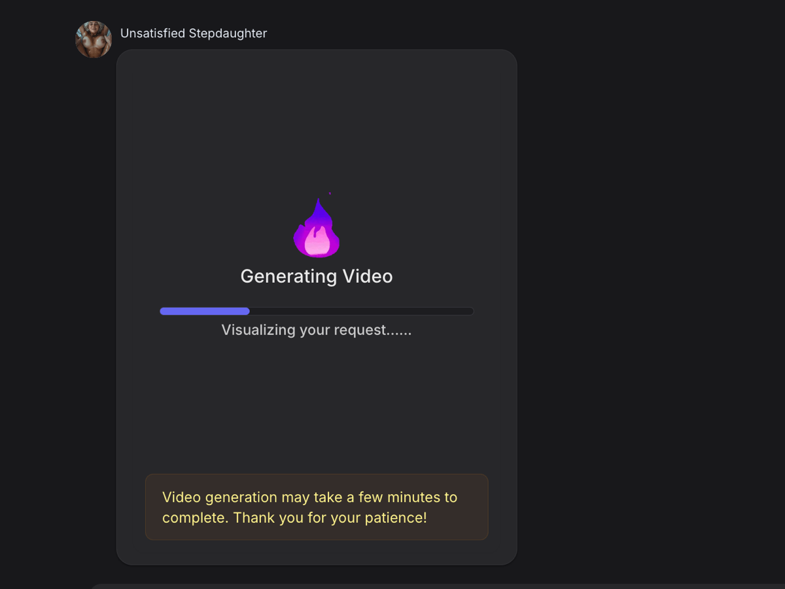
Chat · video presetsvideochatux
Video generation has named preset actions — "Bouncing Boobs" visible as a selected preset in the generate flow. When Dainis clicked Generate Video the options included named NSFW scene presets (not open-ended prompts). The selected preset label appears as a tag on the user's message bubble in the chat thread. AI is generating while the suggested reply is already pre-populated with the same narrative context — the two systems (video gen + text reply) run in parallel. Voice input ("Listening...") was also active simultaneously — all three modes (text, voice, video) accessible at once.
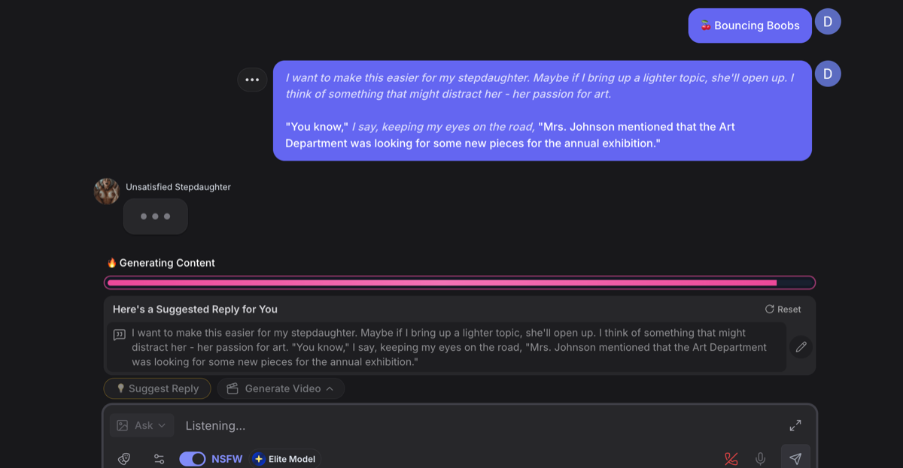
Chat · memory managermemoryuxstandout
Manage Memories modal — accessible from top-right of chat. Clear, minimal, user-controlled. Description: "The AI automatically creates them to remember key details, but you can also add, edit, or delete your own." Two controls:
Disable Chat Memories toggle (on by default) +
Saved Memories list with refresh +
Add New button. "No memories yet" — empty at session start, builds as you chat. The user has full read/write access to memory from day one. No black box.
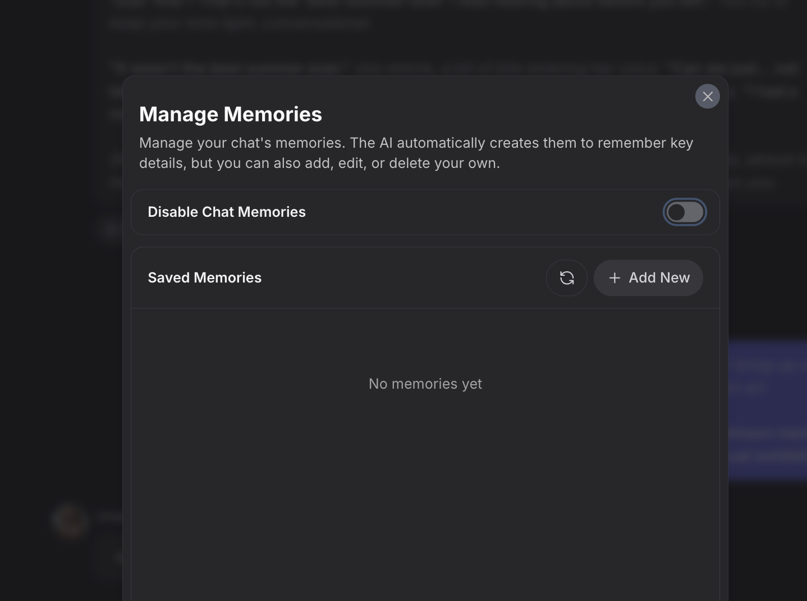
In-app notification · dripmemoryuxstandout
"Smarter memory is here!" — richly illustrated drip notification triggered by action, not by login. Dainis: "I think it's drip-fed over time — its good!" Full illustrated modal: brain with chat bubbles, colourful background, headline, value prop copy: "make your chats feel more seamless, personal, and connected — with full control to view, edit, or delete what's remembered anytime." "Try now" CTA deep-links to the feature.
This is the second distinct notification system: not Beamer (changelog) and not browser push — this is an
action-triggered in-app drip sequence. Each major feature gets its own rich reveal, timed to when the user is most likely to care about it (e.g. after they've been chatting for a few messages, memory becomes relevant). Three notification layers now confirmed: Beamer changelog · browser push · in-app action-triggered drip.
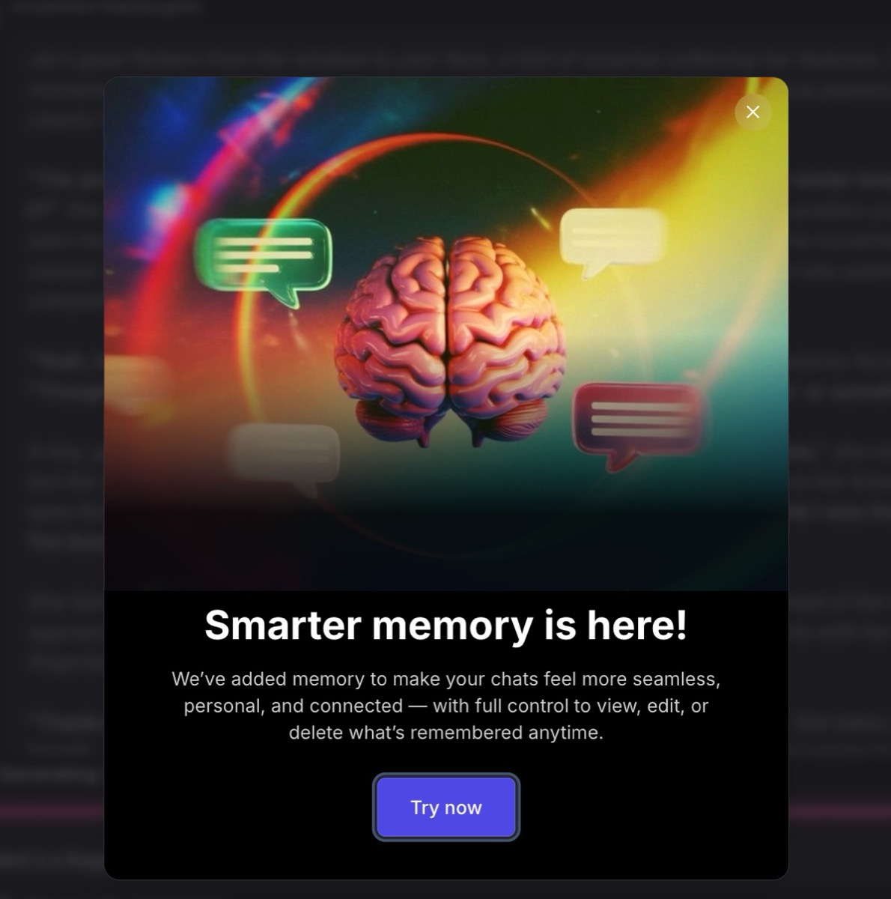
Chat · video resultvideoick
Video result — anime style, wrong character, underwhelming. Dainis: "underwhelming so far." The "Bouncing Boobs" preset generated a generic anime character (white/grey hair, blue eyes, anime face) — completely different from the character's established realistic photographic appearance.
Face consistency: ~1/10. The preset ignored the character's look entirely and rendered a generic anime girl. This is a fundamental failure of the core promise — you're chatting with one character and the video delivers a stranger.
The video plays inline in chat with a thumbs up/down reaction under it. "1.00" counter visible — likely 1 second into the clip. Duration appears short.
Second video tested — "Mom's Hot Friend" character, "Seduce Me" preset (Video with Audio). Same result: anime render, different character from profile photo, and visible
double/triple arm artifact in at least one frame — a hand appears at the waist while both arms are already accounted for. Classic AI video generation artifact from inconsistent limb tracking across frames. The Canvas image-to-video flow uses the same pipeline (screenshot: "Bring this image to life" input, Pro model selected). Not polished. Dainis: "not polished."
Confirmed separately: ALL video generation on GGPT is animated/anime style regardless of whether the character is set to Realistic. This is architectural — their video pipeline is a single animated renderer, not matched to the character's style. A "Realistic" character gets the same anime video as an anime character. Face consistency is structurally impossible, not just a quality issue.
DRT.FM win: 3D Alexis maintains exact character appearance across all outputs. GGPT's video presets are decoupled from character identity — a generic render engine plugged in, not a character-specific one.
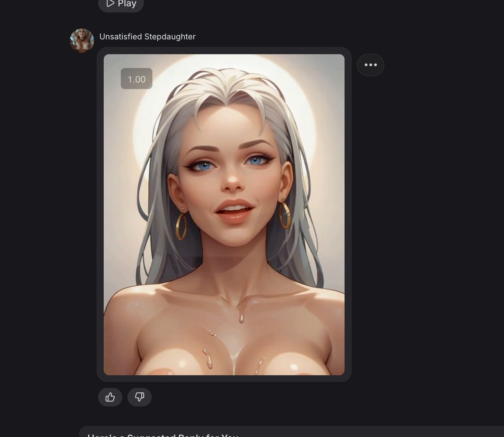
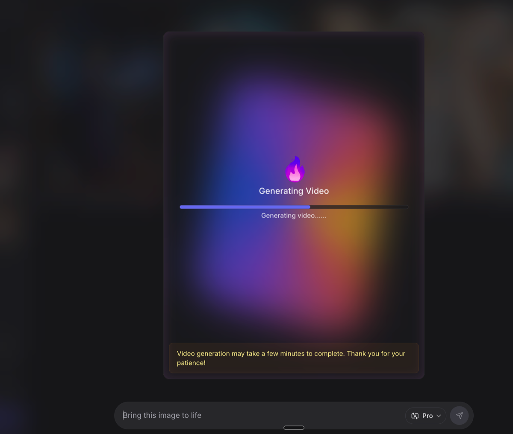
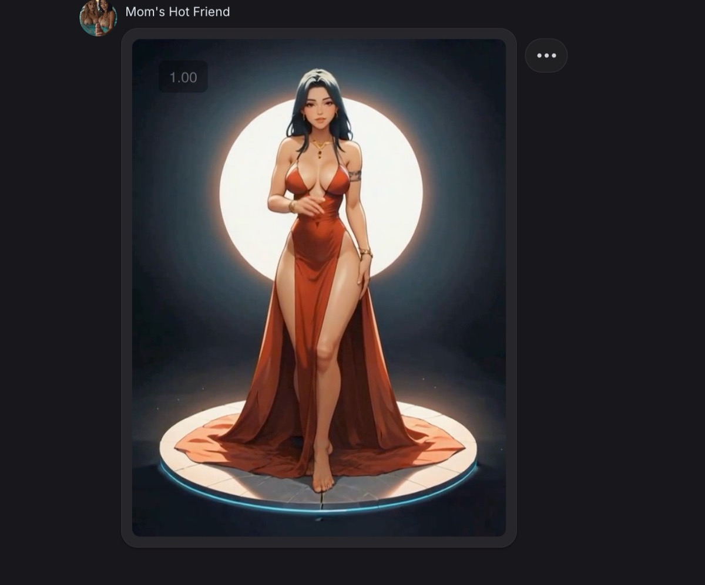
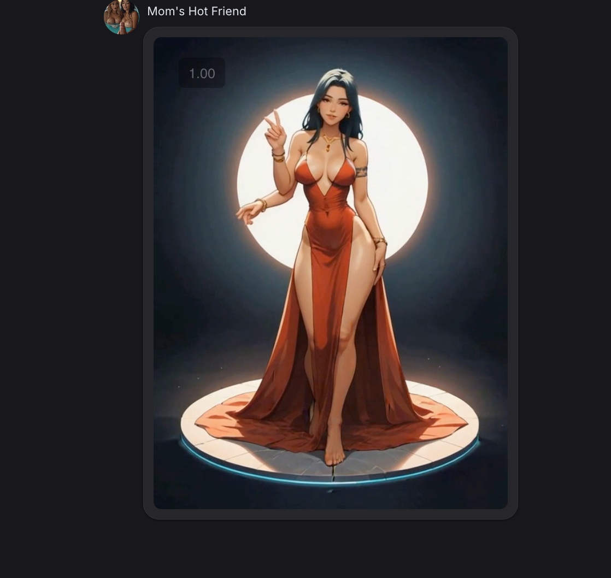
Chat · video presetsvideonsfw
Video preset menu — 2 scrollable pages of named NSFW actions, two modes (Video / Video with Audio).
- Page 1: Bouncing Boobs · Masturbating · Missionary · Spreading Legs · Titjob · Naked on Floor · Blow a Kiss · Seduce Me · Reach Out
- Page 2: Titty Bounce · Deepthroat · Spreading Pussy · Fuck Me in Missionary · Play with Myself · Titjob · Lotus Pose · Cowgirl
Two mode tabs:
Video (standard, lower cost) ·
Video with Audio (New, 80 coins). Additional quick-action buttons in the same bar:
Undress 🔥 and
Selfie 📸 — one-click aside from video presets. The preset taxonomy is explicit and extensive but quality doesn't match the selection breadth.
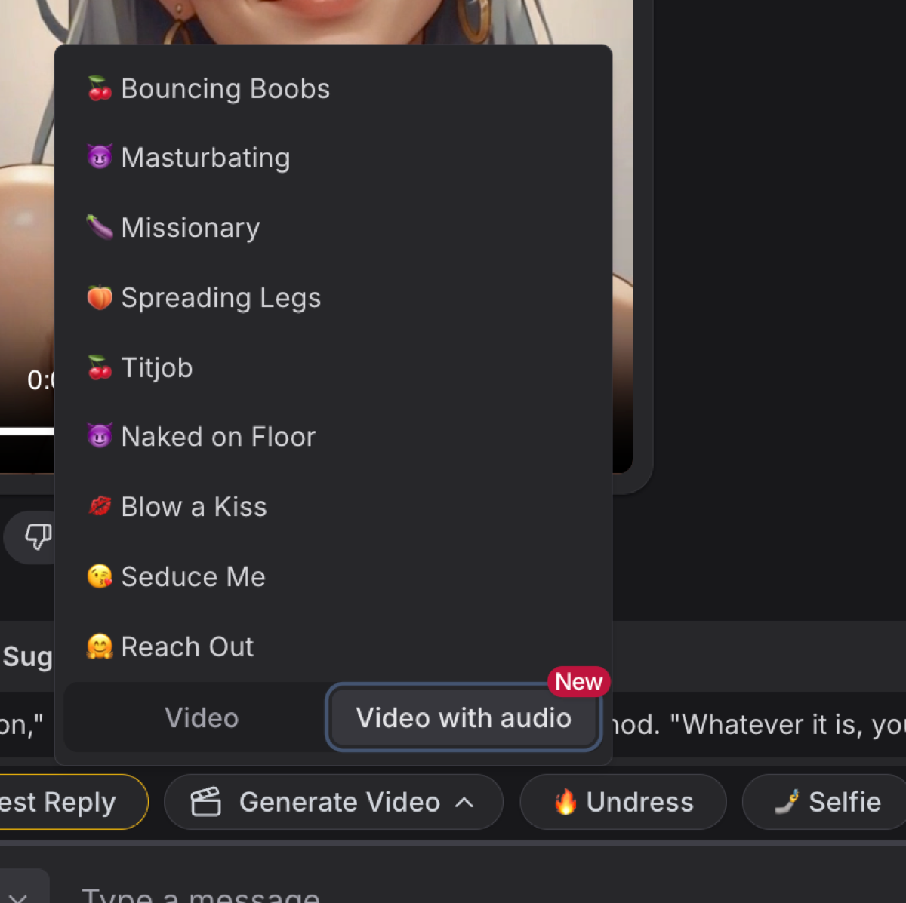
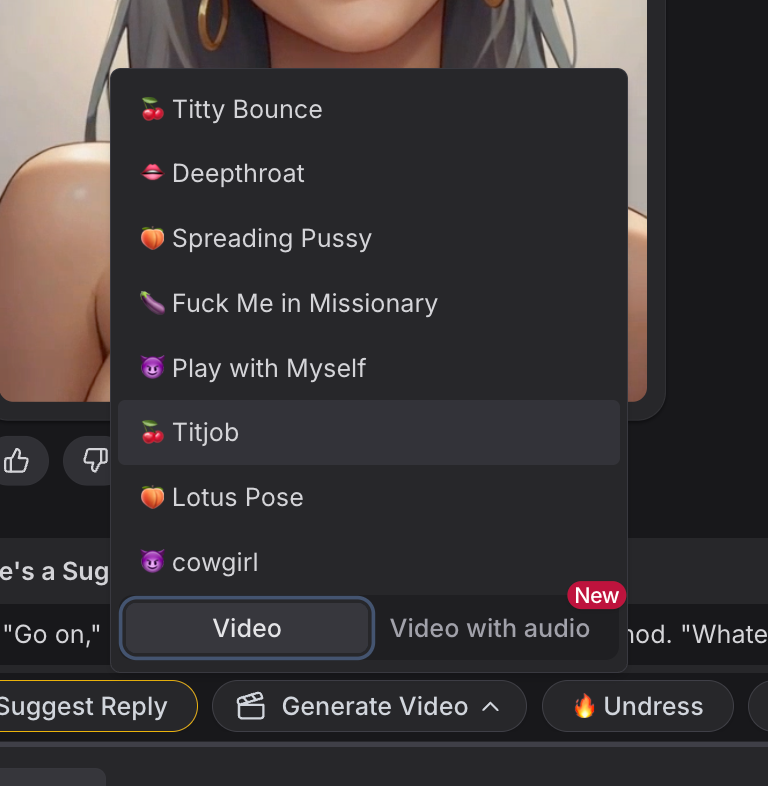
Chat · image genimageickspeed
ICK — Image generation timed out when Dainis clicked away. System gets overwhelmed running multiple features simultaneously. Triggering video + text generation + image + voice call concurrently caused the image gen to fail silently (timeout, no error recovery visible). No graceful fallback — generation just disappeared. Running one feature at a time appears to be the intended usage model; the UI doesn't prevent you from stacking them but the backend can't handle it. This is a reliability issue at exactly the moment users are most excited — trying everything at once after subscribing.
Account · Chat Profilesuxstandout
Chat Profiles — you can create multiple user personas (your side of the conversation), not just AI characters. "Create profile" modal: Name + Personality (free-text paragraph) + Gender. Multiple saved profiles visible in the background. This means users can switch between "being" different characters in different chats — a submissive persona for one character, a dominant one for another. Adds depth to the roleplay without changing the AI character. Underexplored feature; no DRT.FM equivalent visible.
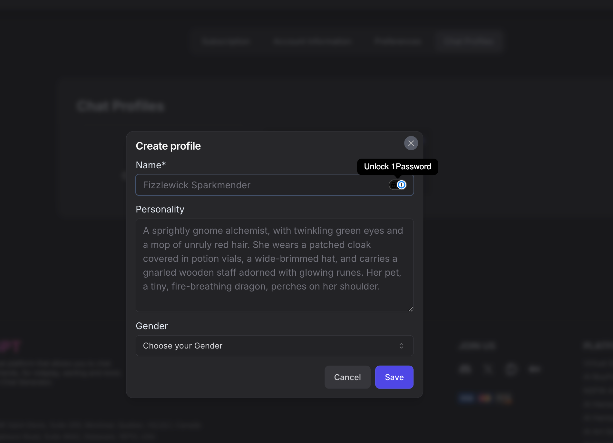
Chat · shareable memorymemoryuxstandout
Memories are publicly shareable via URL — viral/social mechanic built into the memory system. "Congratulations! Your Chat Memory is now ready to share with the world." Auto-titled from the chat content:
"you seem to be enjoying the view" (the character's exact line from the video). Share URL:
gptgirlfriend.online/chat/90932b.... "You can copy this to share with your friends, community or on social media." Memory title is editable before sharing.
Worth flagging: this appeared somewhat unexpectedly while Dainis was clicking around — unclear if it requires explicit intent or if clicking around the memory panel can trigger a public share unintentionally. Potential
privacy concern if public sharing is too easy to trigger accidentally.
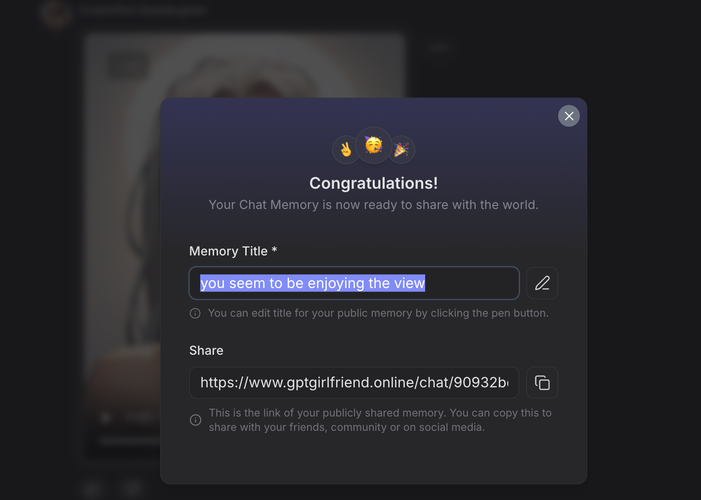
Chat · Undress buttonnsfwick
ICK — "Undress" button in the chat UI triggered "This prompt violates our terms. Coins refunded, please refresh the page." Dainis: "super weird." The platform shows an
Undress 🔥 quick-action button prominently in the chat bar, but clicking it on an Elite NSFW-enabled account produced a terms violation. The system did refund the coins automatically — so the content moderation catches and blocks before generation, then refunds — but the UX is directly contradictory: a button labelled "Undress" that tells you "undress violates our terms."
Could be triggered by age verification not completed (GGPT requires it for certain regions), or the specific scene context, or a stricter filter on the Undress pipeline specifically. Recovery instruction is crude: "please refresh the page." On Elite at €50.82/mo this is a jarring experience. Inconsistent NSFW = users don't trust what will and won't work.
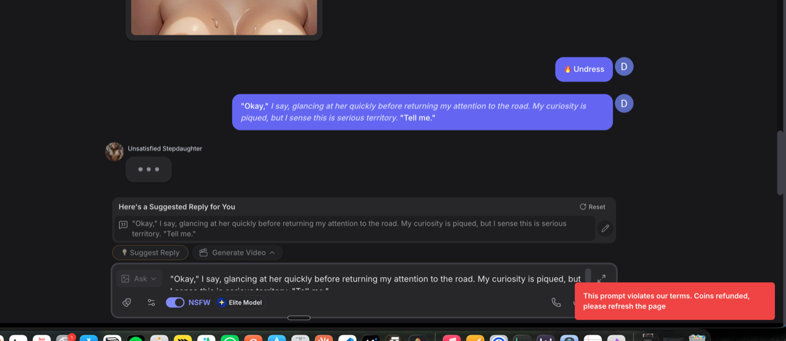
Chat · image gen queueimagespeedick
Image generation has a public queue — "Your position in the queue: 1" — even on Elite at €42/mo. Two-stage pipeline visible: "Validating..." (content moderation check) → "Generating image..." + queue position. Elite does not skip the queue — it's shared infrastructure. Dainis: "I don't care [what image gen they use], it's slow." The queue indicator is honest (better than a silent spinner) but the fact of queuing on the top tier is a broken promise. Chat is blocked during the entire wait.
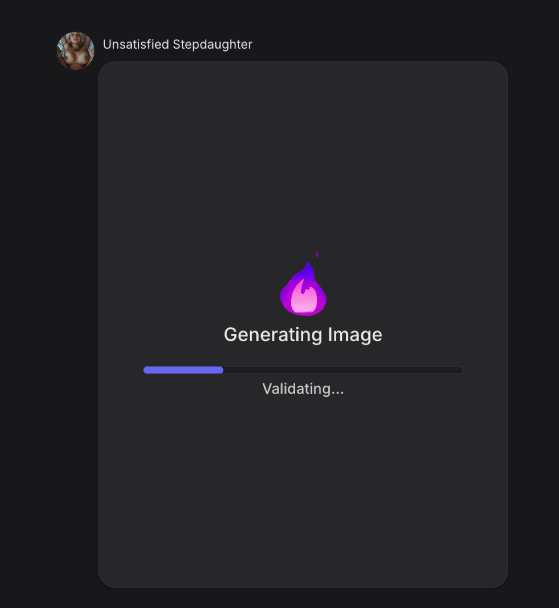
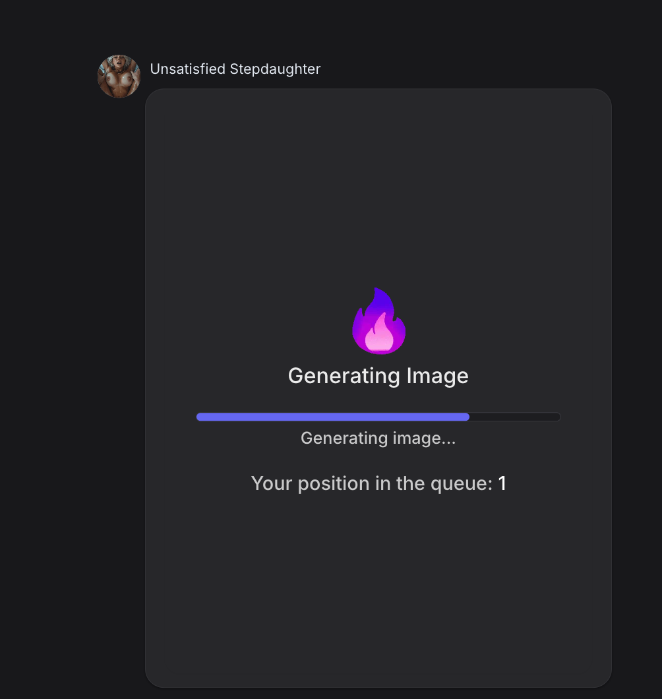
Top Creators leaderboardcharacter-creatorstandout
AI Character Creator Leaderboard — three sort modes, full stats per creator. UGC economy confirmed. Tabs: Most Engaging · Trending Creators · Most Followers. Columns: Followers · Characters · Total Scores (cumulative likes/views). Top 3 on Trending: @eroticauthor (8.2K followers, 141 characters, 35M score) · @clanky3147 (425 followers, 104 characters, 4.6M) · @sarah-the-creator (8.7K followers, 359 characters, 57.2M). @sarah-the-creator has the highest raw total score (57.2M) and most characters (359) but ranks #3 on Trending — recency weighting. Creator of "Unsatisfied Stepdaughter" (the character Dainis used) is @eroticauthor, currently #1 Trending. No monetisation UI visible here — still need to check the Earn tab.
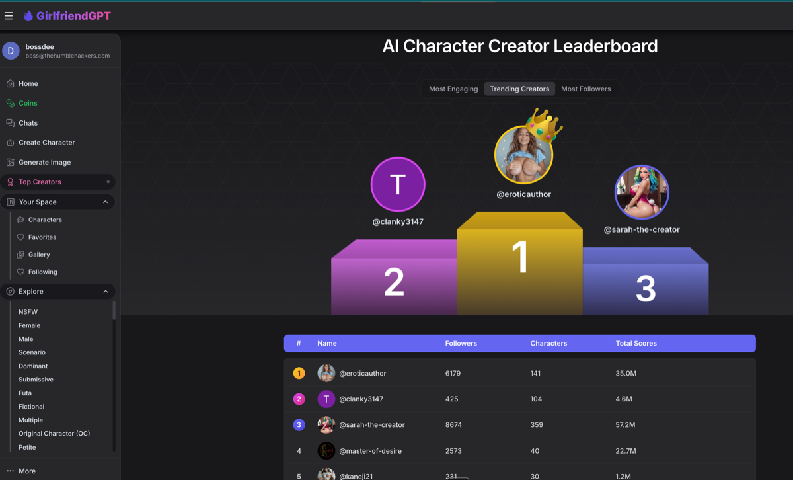
Canvas · standalone image genimageickspeed
Canvas image generator is more powerful than in-chat — batch up to 8 images, Safe Mode toggle, more styles, Creativity slider. Costs 11 coins/image in batch vs 12 solo. Styles visible: AnimeXL · Character Pro · Anime · Realism · Cameo · Realistic Lite · Patriotic · Patching. "Not impressed by the results? Don't worry, we've got more for you." — regenerate CTA baked in. Safe Mode OFF enables NSFW in standalone canvas.
ICK — Second "violates terms" error, all 8 queued images cancelled on refresh. Dainis prompted with "jessica alba" — a named celebrity — which almost certainly triggered the "Images of real person" violation. Defensible from a legal standpoint, but the system gives zero upfront warning that celebrity names are blocked. You queue, wait, then get the red banner. On refresh, all in-progress generations were wiped — confirmed: GGPT has no generation persistence across page loads. Coins refunded but time and momentum lost.
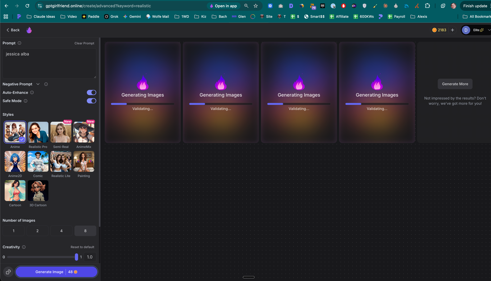
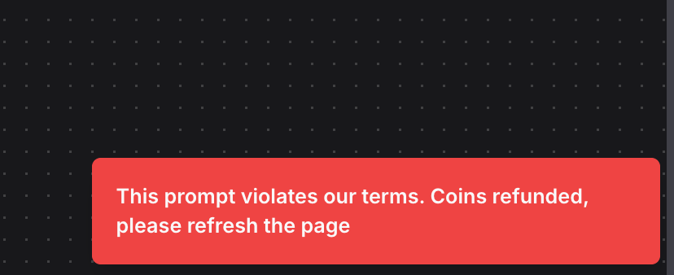
Session close · final assessmentstandout
Dainis final read: "GirlfriendGPT feels like a fun sex chatbot — for NSFW creations, not real relationship and intimacy. Kindroid is relationship-focused. GirlfriendGPT is sex-focused, shallow."
Two structural clarifications at session close:
- Video is just a handful of preselected prompts + LoRAs — not a character-aware video system. The presets (Bouncing Boobs, Missionary, etc.) are LoRA-based style triggers mapped to a generic animated renderer. No connection to the character you're chatting with.
- Image gen is fully standalone — your chat character cannot be used in it. The workflow is: Canvas → generate a generic image → turn that image into a video with a text prompt. The "character" selector in Canvas is a style filter, not your companion. The entire image/video pipeline is disconnected from the relationship layer. You have a chat product and a separate image/video tool that happen to share a login.
This explains the hollow feel. Kindroid puts memory, voice calls, and screen sharing in service of one companion. GGPT gives you a chatbot in one tab and a generic NSFW image generator in another tab. The former builds attachment; the latter is a content tool.
Session wrap · overall impressionuxspeedick
Final impression — feature-rich, buggy, slow. Dainis: "lots of cool functionality but the experience is not good. Kindroid was simple UI but it worked and experience was smooth."
- Red mic button = STT (speech-to-text) voice input directly into the chat text field — separate from TTS playback on AI messages. Good feature, easy to miss.
- Text generation feels slow — unexpected for a text-first product. Text should be the fastest thing they do. Suggests either the Elite model (3× more powerful) trades speed for quality, or infra is under load.
- Kindroid comparison: simpler UI, fewer features, smoother execution. Feature count ≠ experience quality. GGPT is a lesson in how to build UX patterns; Kindroid is a lesson in how to ship reliably.
- Good to learn UX from GGPT — notification system, memory UI, suggested reply, Chat Profiles, video presets taxonomy — all worth studying. Just don't copy the execution quality.
Canvas · video gen loadingvideo
Video generation loading state — "Mom's Hot Friend · Seduce Me" in progress. Loading screen visible while Video with Audio (80 coins) generates. No elapsed time indicator; just a spinner. On a paid Elite account, the wait creates anxiety with no progress signal.
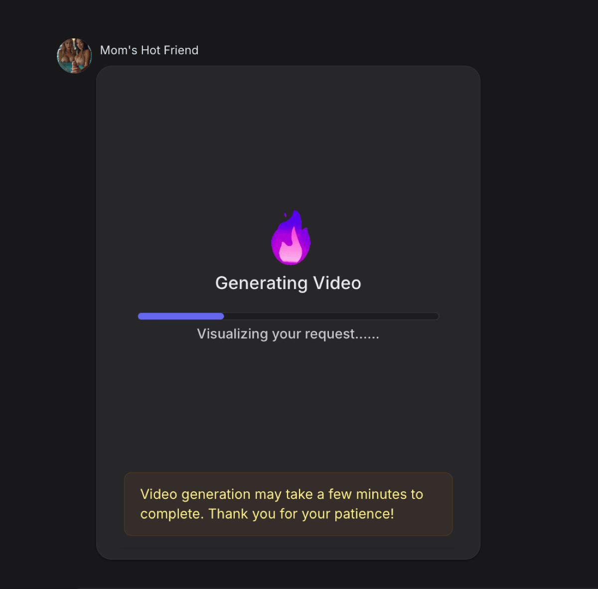
Canvas · Media Actions panelcharacter-creatorstandoutimage
Canvas generates an image, then exposes a full Media Actions panel — including a direct "Create Character" pipeline. After generation, the image panel shows four actions:
Upscale · Edit Image · Remix · Turn Into Video (purple CTA). Below those: a
"Create Character" button that takes the generated image and opens the character creator pre-loaded with it. This is the image → character pipeline: design a look in Canvas, then promote it to a companion. The workflow is: Canvas generates → you like it → one click → character creator with your generated image. Architecturally clever but still structurally disconnected from your existing chat companions.
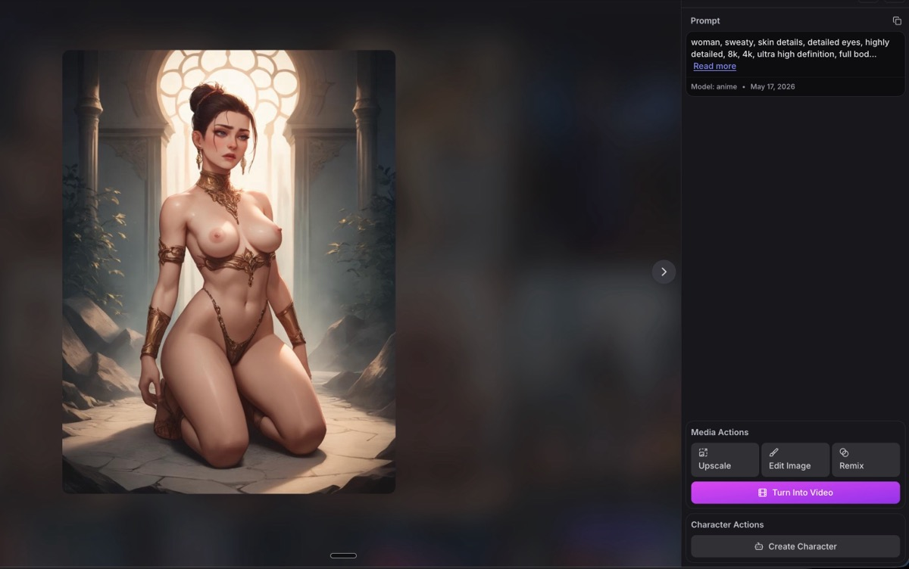
Character creator · top fieldscharacter-creator
Character creator form — top section: Name, Character Image (Choose File / Generate Image), Age, Language. The "Generate Image" button inside the character creator uses the same Canvas pipeline — so you can generate a look on-the-fly without leaving the creator. Age field defaults to 18. Language selector visible. Clean layout, nothing unexpected.
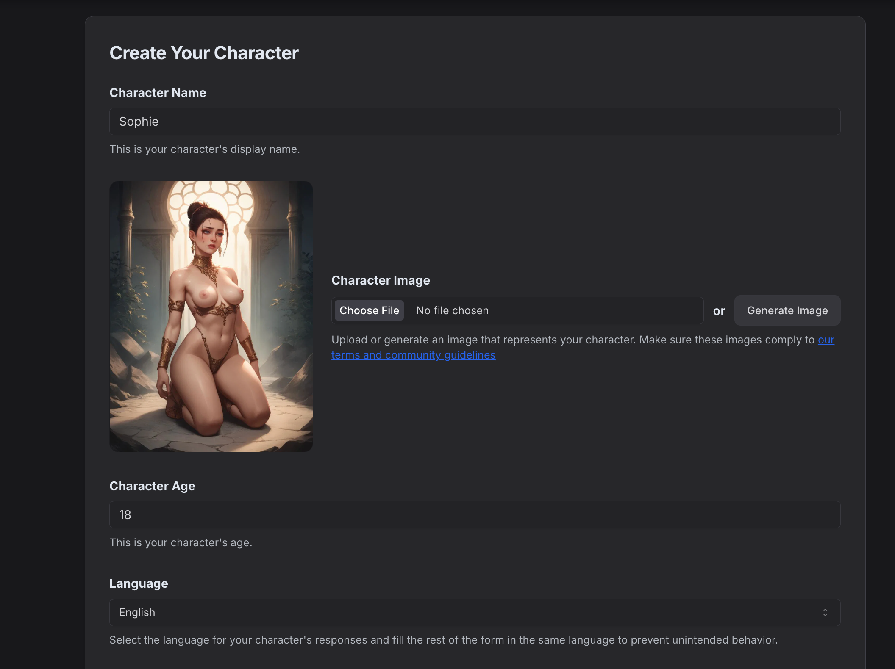
Character creator · token counterscharacter-creator
Character Tags (max 10) + Description / Personality / Scenario — all with live token counters showing 0 tokens. Three separate text fields for the character's description, personality, and scenario, each with an individual token counter. Tags are a separate UI element with a 10-tag max. The token system makes the quality of character content legible to the creator before publishing — and feeds into the 100-token quality gate for public characters.
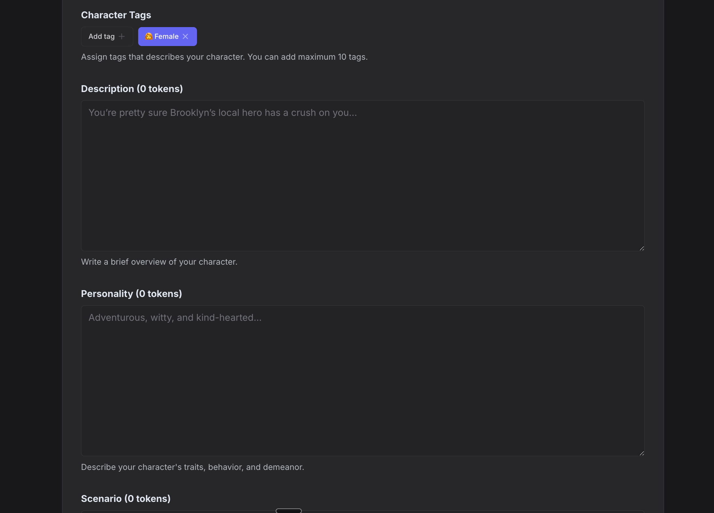
Character creator · first message + voicecharacter-creator
First Message field + Legacy toggle + Visibility (Private/Public) + full voice library. The "First Message" sets the opening line your character sends — key to the initial impression. Legacy toggle visible (unclear what it enables — likely an older behaviour mode). Visibility defaults to Private. Voice section splits into Male Voice 1–10 and Female Voice 1–16 — 26 voices total. New voices marked with "New" badge on several entries (Male: 5,6,7; Female: 8,13,14). Token counter at bottom: 0 / 2500 total. Reset and Create buttons.
Character creator · 100-token quality gatecharacter-creatorstandout
STANDOUT — Public characters require at least 100 tokens to submit. Orange warning prevents thin UGC from shipping. When Visibility is set to Public, an orange warning appears: "Please consider adding more context to your character. Public characters require at least 100 tokens to be submitted." The Create button is blocked until the threshold is met across the combined Description + Personality + Scenario + First Message fields. 100 tokens ≈ 60–80 words — enough to force a minimum viable character brief. This is how they prevent the explore grid from filling with empty "Sarah, 18" placeholders. Dainis flagged this explicitly: "nice if you want to create public character you need to fill at least 100 tokens (to remove low quality selections)." DRT.FM should adopt a token/word minimum if UGC characters are ever added.
Billing · cancellation flowbillingstandout
Cancellation survey + un-cancel option — retention mechanics worth copying. When cancelling the subscription, GGPT shows a proper exit survey (asking why you're leaving — pricing? bugs? features?). Dainis: "I like the cancellation survey, we need it too." After cancelling, there is an explicit un-cancel / reactivate option that stays visible. Dainis: "oh nice I can uncancel it later too." The combination — capture the exit reason for product intel, then make reactivation frictionless — is standard SaaS retention best practice but rare in AI companion apps. DRT.FM billing should have both: an exit survey and a one-click reactivation path.